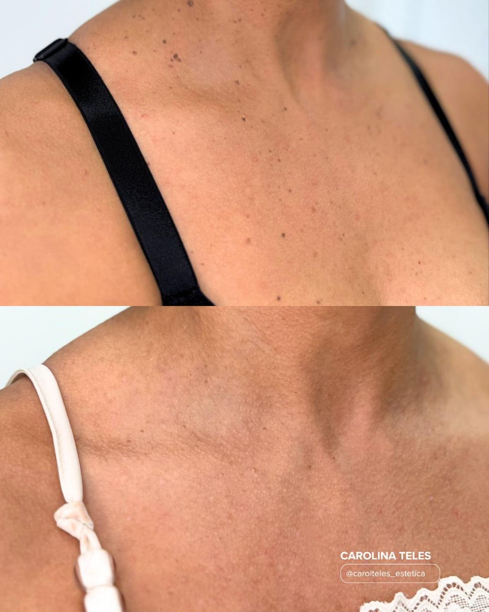

A ciência
da beleza,
com o seu
ritmo.
Um olhar individual para sua beleza. Onde o conhecimento, a atenção e o cuidado se encontram.
PROPÓSITO✳
Não se trata de seguir padrões. Trata-se de encontrar um cuidado que faça sentido para você.
Conheça nossa filosofia ↗Beleza não é sobre
mudar quem você é.
É sobre cuidar.
Ciência
Atenção à técnica e a cada etapa do atendimento.
Naturalidade
Respeito aos traços, à individualidade e às suas escolhas.
Acolhimento
Escuta, transparência e presença em cada conversa.

PELE REAL. HISTÓRIAS REAIS.O cuidado
está nos
detalhes.
✳Cada pessoa traz uma história, uma rotina e expectativas diferentes. É daí que o cuidado começa.
↗Seu universo
de cuidados.
Explore os temas de interesse. A escolha das técnicas e as indicações são sempre feitas individualmente, após avaliação.
Serviços citados a partir dos materiais fornecidos; disponibilidade, indicações e habilitações específicas deverão ser confirmadas com a clínica. Fotografias ilustram temas de cuidados e não representam garantia de resultado.
Cada rosto,
uma história.
Explore regiões do rosto e descubra assuntos que você pode levar à avaliação.
Testa
Converse sobre textura, rotina e cuidados gerais da região.
Assuntos para sua avaliaçãoO detalhe também
conta histórias.
Observe registros compartilhados como referências visuais. Arraste para comparar fotografias.
Região facial
Documentação visual compartilhada. Fotografias e enquadramentos podem apresentar diferenças de iluminação, distância e momento do registro.
Resultados variam de pessoa para pessoa. A divulgação destas imagens depende de autorização dos pacientes e regras profissionais aplicáveis. Não representam promessa de resultado.
Uma experiência de
ponta a ponta.
REPRESENTAÇÃO CONCEITUAL DAS ETAPAS DO ATENDIMENTO, SEM SIMULAR AMBIENTES REAIS.
CONTINUE EXPLORANDO →O cuidado
começa em
você.
Um percurso em cinco escolhas para transformar sua curiosidade em uma conversa mais direcionada.
Muito prazer,
Carolina.
Acredito em uma estética que combina atenção, conhecimento e respeito pela beleza de cada pessoa.
Uma trajetória dedicada ao cuidado e à saúde, com olhar voltado à individualidade e ao acolhimento em cada atendimento.
Fisioterapia dermatofuncional e estética conforme materiais apresentados. Verificar a documentação profissional antes da publicação.
Suas dúvidas
merecem atenção.
Entenda a experiência antes de solicitar sua avaliação.
Fale com a equipe ↗O seu próximo
capítulo pode
começar hoje.
Estamos em Jaboatão dos Guararapes, Pernambuco. Será um prazer conhecer sua história.
⌖ Av. Gen. Manoel Rabelo, 5117 — Sucupira, Jaboatão dos Guararapes